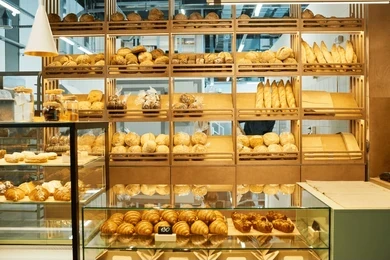

Hours
Monday to Saturday: 7:00 AM – 6:00 PM
Sunday: 8:00 AM – 3:00 PM
Freshly baked every day
Visit our local café for a friendly morning treat, browse our seasonal bakery menu, and place an easy catering request for your next event.

Our bakery focuses on slow-made breads, seasonal pastries, and custom catering that supports local ingredients and welcoming community service.
Each loaf and pastry is shaped by hand, baked fresh every morning, and paired with expertly brewed coffee for a memorable breakfast or lunch stop.
From sourdough to croissants, our menu highlights customer favorites with gluten-friendly options, vegetarian treats, and catering platters for groups.
Explore the fresh items our pastry chef recommends right now.
Monday to Saturday: 7:00 AM – 6:00 PM
Sunday: 8:00 AM – 3:00 PM
123 Artisan Lane
Springfield, USA
Call us at (123) 456-7890 or fill out the catering request form.